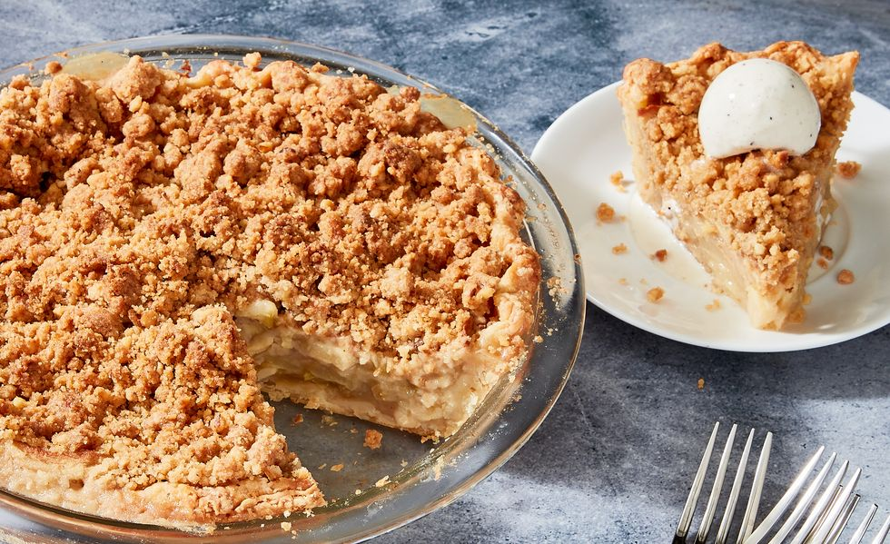

Apple Crumble
Volver al inicio

Description
A crumble is a dish that can be made in a sweet or savory
version. Crumbles became popular in Britain during World War II, when the
topping was an economical alternative to pies due to shortages of pastry
ingredientes as the result of rationing.
Ingredients
Base
- Manzanas Rojas medianas: 4 o 5
- Canela: 1 cucharada generosa
Cobertura Superior
- Manteca: 70-80 gramos
- Harina: 1 taza y media
- Azucar: 1 taza
Steps
Base
- Cortar las manzanas en cuadraditos chicos. Se meten junto con medio vaso de
agua y la cucharada generosa de canela en una olla viejita y se la pone al
fuego bajo hasta que las manzanas esten bien blanditas
Cobertura Superior
- Derretir la manteca. Derretir la manteca unos segundos al
microondas o dejarla fuera para que este a
temperatura ambiente.
- Mezcla. Mezclar todos los ingredientes de la cobertura superior con los dedos de
las manos, formando bolitas como de granulado.
- Horno. Se colocan las manzanas en una fuente y arriba el granulado, y se lleva
todo al horno a temperatura media. Està listo cuando el crumble esta doradito y la fruta hace como
burbujitas.